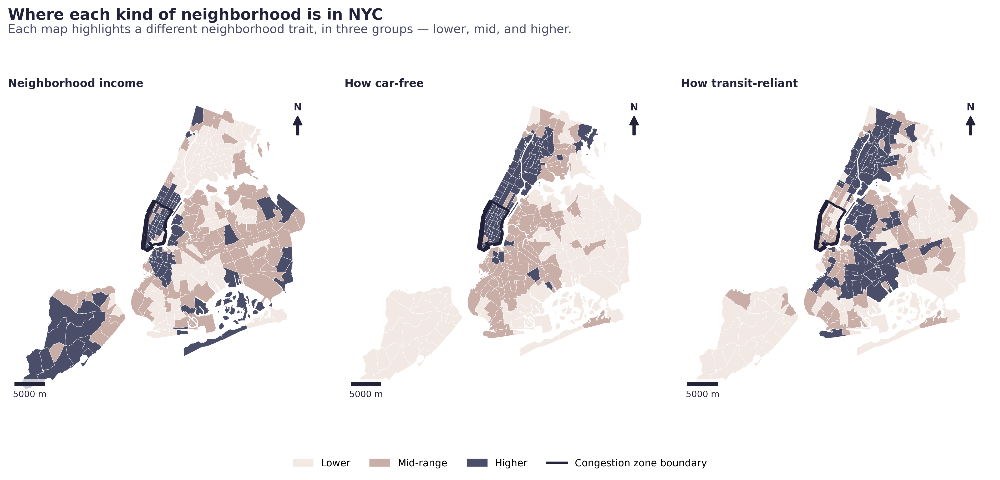
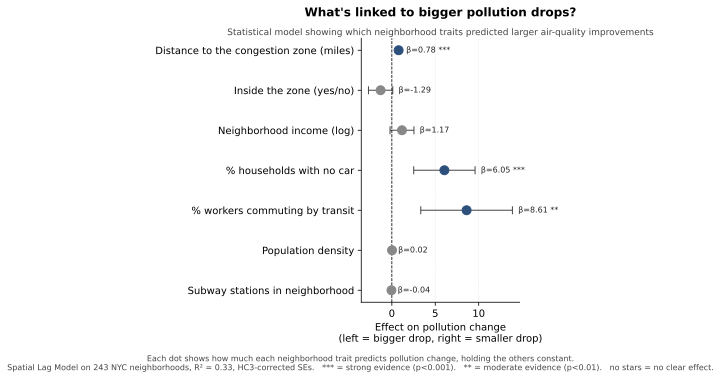

How this analysis isolates the congestion zone's effect from broader atmospheric change.
This chapter explains the placebo comparison, the satellite measurements, the neighborhood aggregation, the statistical model, and the limits of what the data can responsibly say.
The core analytical problem
Air pollution changes for many reasons: weather, economic activity, seasonal cycles, vehicle turnover, and long-term emissions trends. To estimate whether congestion pricing mattered, the analysis needs a comparison representing what would likely have happened without the policy.
The basic strategy is a placebo design. The analysis compares a real policy window — before vs. after congestion pricing — against a placebo window from a year earlier, when no congestion zone existed. Any pattern appearing in both comparisons is likely background atmospheric drift. Any additional pattern appearing only after January 2025 is more plausibly associated with the congestion zone itself.
The placebo comparison
The congestion zone began on January 5, 2025.
The "real" comparison measures NO₂ change between Jan 2023 – Apr 2024 and Jan 2025 – Apr 2026. The placebo comparison repeats the same exercise one year earlier — 2023 vs. 2024 — when no congestion zone existed.
The purpose of the placebo is to estimate how much NO₂ changes naturally year to year, even without policy intervention. Atmospheric conditions shift continuously due to weather, regional emissions patterns, and long-term fleet turnover.
If the placebo comparison had produced a similar Manhattan-centered anomaly, the analysis could not confidently attribute the observed change to congestion pricing. Instead, the placebo period shows little comparable signal over lower Manhattan, strengthening the interpretation that the post-2025 pattern reflects more than ordinary atmospheric variability.
The satellite
What TROPOMI measures
This project uses nitrogen dioxide measurements from TROPOMI, a spectrometer aboard the European Space Agency's Sentinel-5P satellite. TROPOMI estimates atmospheric NO₂ by measuring how sunlight reflects through the atmosphere. The result is a "column density" measurement: the total amount of NO₂ present in the air column above each location.
Column NO₂ is not identical to street-level exposure. Because most NO₂ remains concentrated in the lower atmosphere near emission sources, satellite measurements are strongly correlated with traffic-related urban pollution patterns, but they are a regional proxy rather than a direct measure of breathing-level air.
The advantage of satellite data is coverage: instead of relying on a limited ground-monitor network, TROPOMI provides repeated citywide measurements across all of NYC.
Monthly averaging
The analysis uses monthly average grids rather than daily measurements to reduce weather noise and short-term atmospheric variability. The comparison windows are season-matched: Jan 2023 – Apr 2024 against Jan 2025 – Apr 2026. Using identical calendar months helps remove recurring winter and summer pollution cycles from the comparison.
Spatial resolution
TROPOMI's native footprint is roughly 5.5×3.5 km, resampled here to approximately 5×3 km. That resolution is coarse. It is sufficient for identifying broad regional patterns — such as whether lower Manhattan changed differently from the rest of NYC — but not for interpreting individual blocks, intersections, or highly localized roadside conditions.
Neighborhood aggregation
To compare pollution change across neighborhoods, the analysis aggregates the satellite measurements to NYC's 263 TLC taxi zones using area-weighted averaging.
Taxi zones are imperfect demographic units — they were designed for transportation analysis rather than population research — but they align reasonably well with the satellite's coarse spatial resolution. A finer geometry would imply a level of precision the data cannot deliver.
Demographic comparisons
For each zone, the analysis merges demographic measures from the American Community Survey: median household income, vehicle ownership, transit commuting share, and population density. To evaluate distributional patterns, neighborhoods are split into thirds ("tertiles") for each trait and compared against the congestion zone.
Uncertainty estimates
The confidence intervals shown throughout the project come from bootstrap resampling. In practice, this means repeatedly rerunning the same comparison on slightly altered versions of the data to estimate how stable the results remain across resamples.

Statistical model
The forest plot below summarizes a Spatial Lag Model predicting neighborhood-level NO₂ change. Spatial models account for the fact that nearby neighborhoods influence one another environmentally; air pollution does not stop at administrative boundaries.
The model estimates how strongly different neighborhood traits predict NO₂ change while controlling for the others simultaneously, including distance to the congestion zone, transit commuting share, vehicle ownership, income, and population density.
The model explains roughly one-third of neighborhood-level variation. That is substantial enough to interpret the coefficients meaningfully, but limited enough to avoid overstating precision.

What this analysis cannot measure
This project measures monthly NO₂ column density over broad spatial areas. It does not directly measure:
- PM2.5
- ozone
- indoor exposure
- within-day variation
- individual health outcomes
- hyperlocal roadside conditions
The South Bronx PM2.5 findings released by Columbia and South Bronx Unite are therefore not necessarily inconsistent with this analysis. Different instruments measuring different pollutants at different spatial scales can produce different patterns simultaneously.
The findings here should be interpreted as evidence about citywide and zone-level atmospheric change, not block-level exposure or the full public-health impact of congestion pricing.